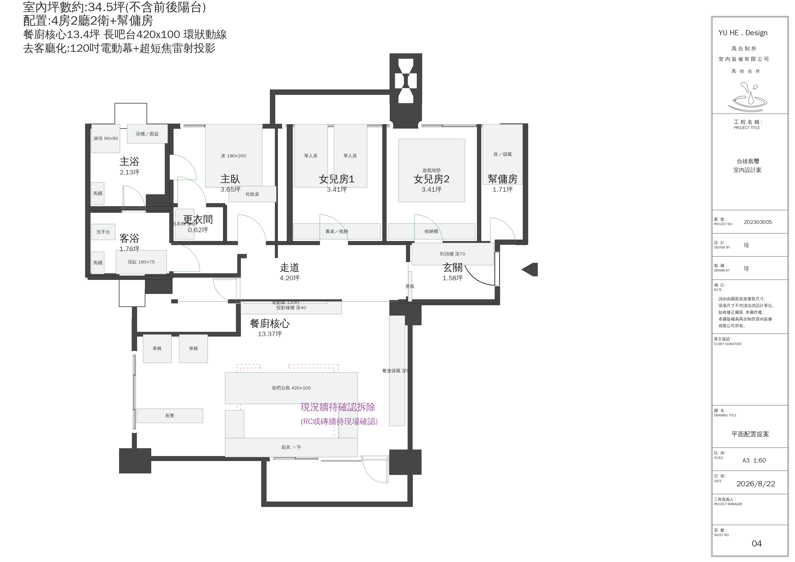
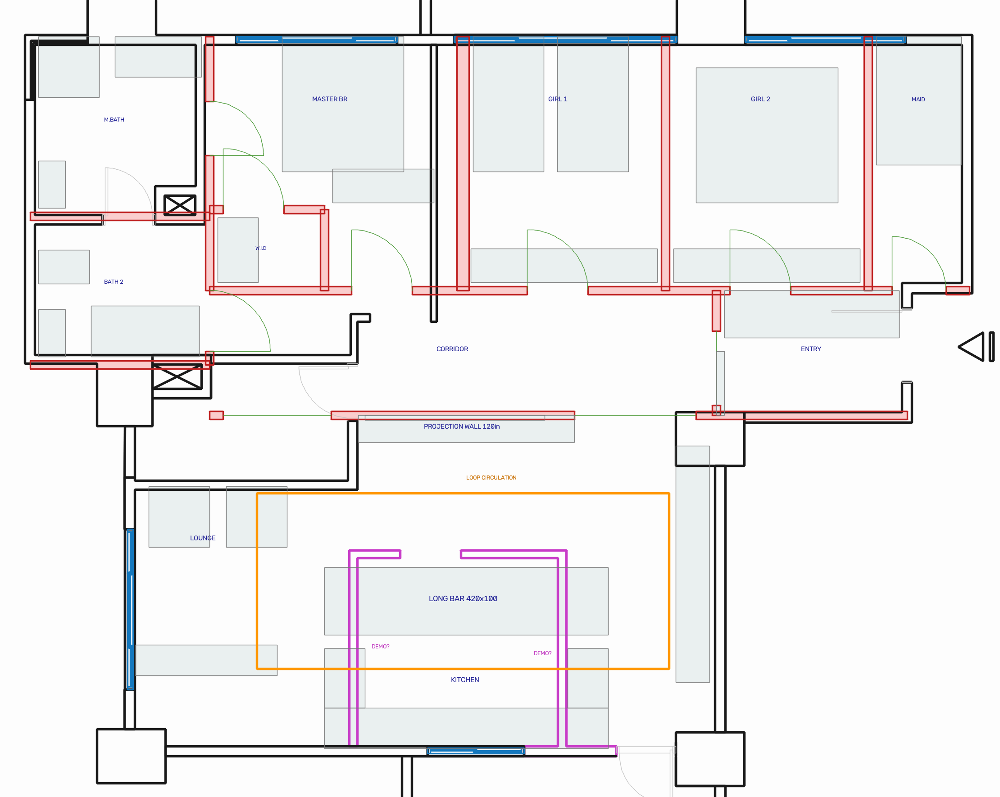

取消傳統沙發＋電視牆的客廳，改以一座 420×100 的長吧台島 作為全家的生活重心 —— 吃飯、寫功課、備料、聊天、看投影都在這裡發生。島的四周留出完整環狀動線， 五個人可以同時在同一個空間裡各做各的事，而不互相卡位。
依禹合圖紙規格出圖（A3 1:60、案號 202303005、頁次 04），可直接併入圖冊

深灰＝牆體（現況＋新作） 綠＝門／開口 紫虛線＝待確認拆除 淺灰＝家具設備

黑＝現況結構 紅＝新增隔間 綠＝門／開口 橘框＝環狀動線 紫＝待確認拆除
長吧台島四周淨距，全部大於單人通行 900mm
| 方向 | 對象 | 淨距 | 判定 |
|---|---|---|---|
| 南 | 至廚具檯面前緣 | 1080 mm | ✔ 料理主動線 |
| 北 | 至投影矮櫃 | 1850 mm | ✔ 可擺椅後通行 |
| 西 | 至西外牆 | 2950 mm | ✔ 起居區 |
| 東 | 至東牆 | 1600 mm | ✔ 通玄關主動線 |
| 空間 | 坪 | 採光 | 說明 |
|---|---|---|---|
| 餐廚核心 | 13.37 | WIN-D/E | 廚房ㄇ字＋長吧台島＋投影起居，無隔間 |
| 走道 | 4.20 | — | 串連玄關－核心－臥室帶 |
| 主臥 | 3.65 | WIN-A | 加強隔音．床頭可移 |
| 女兒房1 | 3.41 | WIN-B | 姊姊房，初期姊妹共用 |
| 女兒房2 | 3.41 | WIN-C | 先作遊戲間，與女兒房1等大對稱 |
| 主浴 | 2.13 | — | 乾濕分離＋電熱水器．沿用西北管道間 |
| 客浴 | 1.76 | — | 增設 160 浴缸．沿用西中管道間 |
| 幫傭房 | 1.71 | WIN-C 邊 | 小間兼儲藏 |
| 玄關 | 1.58 | — | 落塵區＋屏風＋整面到頂櫃 深70 |
| 更衣間 | 0.62 | — | 步入式．單側金屬吊衣桿＋門片 |
| 合計 | 35.84 | — | 軸線面積（未扣牆），對應你圖上淨 34.5 坪 |
| 需求 | 本案作法 |
|---|---|
| 女兒房 2 間面積須一樣大 | 各 3.41 坪，並排、等大、對稱，各有北向窗 |
| 初期姊妹共用姊姊房，妹妹房先作遊戲間 | 女兒房1 置雙單人床；女兒房2 留空作遊戲間，傢俱可無痛轉臥房 |
| 主臥加強隔音 | 與女兒房1 之間採 180mm 隔音牆（雙層板＋隔音棉），已計入 |
| 更衣改金屬吊衣桿系統＋門片 | 步入式更衣間 0.62 坪，單側吊桿深 60＋走道 110 |
| 床頭位置可變更 | 主臥 3.75×2.56 淨區，床頭可靠北或靠西 |
| 玄關收納：行李箱深65–70＋鞋櫃＋吊掛55–60 | 整面到頂櫃 深 70，長 2.59m；屏風獨立設置不佔櫃深 |
| 廚房 ㄇ字型＋吧台 | ㄇ字廚具沿用既有排煙與瓦斯位置；吧台獨立為中央島 |
| 餐廳 6–8 人餐桌＋餐邊儲藏 | 長吧台島 4.2m 可坐 8 人；東牆餐邊儲藏深 50、長 3.5m |
| 客廳可設投影布幕 | 核心區北牆 120 吋電動幕＋超短焦，天花預留結構與電源 |
| 主浴乾濕分離＋電熱水器 | 2.13 坪，淋浴 90×90 獨立間，電熱水器專迴 |
| 客浴增設浴缸 | 1.76 坪，160×75 浴缸沿長邊配置 |
| 幫傭房小間兼儲藏 | 1.71 坪（1.5×3.76），床＋儲藏櫃 |
| 掃拖機器人自動給排水 | 建議設於廚房ㄇ字東臂端，近既有給排水，管線最短 |
| 全室地坪齊平 | 全案同一完成面；兩間衛浴濕區改長條排水溝＋緩坡，另做止水墩 |
| 保留大門 | 大門位置未動 |
WALL-RC 圖層（而 WALL-BRK 全圖只有一個圖元），
所以我無法從圖層判斷它們是真的 RC 還是磚牆。已在 DXF 中另存為「待確認拆除」圖層。業主預算 350–400 萬｜室內 34.5 坪
這個帶做健康建材是站得住的。要留意的加項：主臥隔音牆、兩間衛浴移位／新增浴缸、 長吧台島（檯面材質差價大）、超短焦投影機、掃拖機器人給排水預留、 智慧家庭佈線。建議報價時把追加預備金抓總價 10% 一併說明。